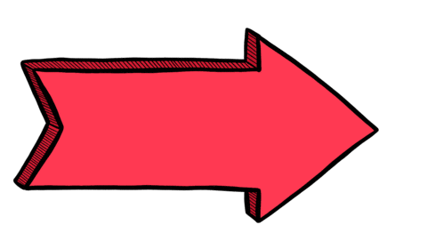
Point something out
1.29B lifetime views- Searches in my analytics
- here · next · flecha · arrow
- The moment
- Draw attention to a detail, link, or next step.
- Design focus
- A clear direction, with bold colour and a hand-drawn finish.
I design searchable animated sticker systems for brands.
Small animations that help people say what they mean. An extension of my work across brand, product, and marketing.
15B+ lifetime GIPHY views. Monthly highlights: Aug 30–Sep 30, 2026.
A sticker has a small space to do its job: express a feeling, mark a moment, or help someone say what they mean. My GIPHY work brings illustration and motion together with the language people use to search.
The reach above shows how these small pieces of visual communication can travel at scale. The design challenge is familiar: understand what people need, then make the next step feel natural.
I think about the moment behind each asset: what someone wants to say, the words they might search, and whether the animation reads clearly at a small size. A useful collection gives those moments a consistent visual language.
Eight examples, from useful visual tools to everyday objects and characters.
Lifetime views per sticker, checked on Sep 30, 2026. Search labels distinguish measured searches, GIPHY tags, and suggested terms.

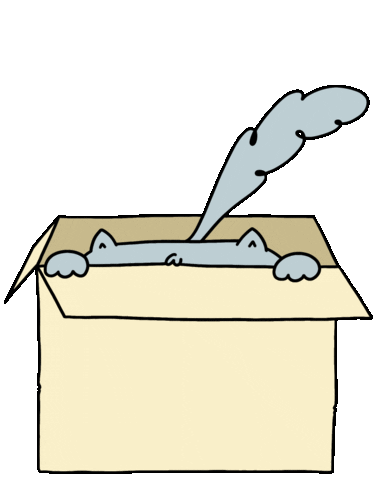
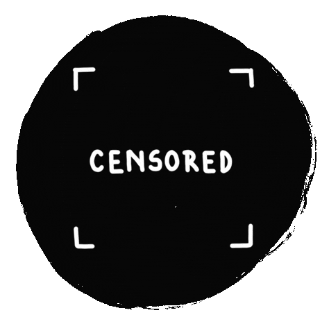
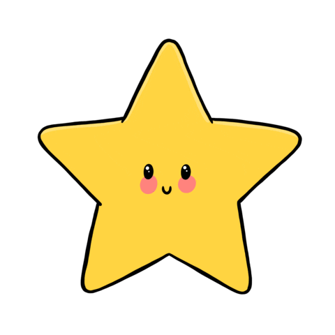
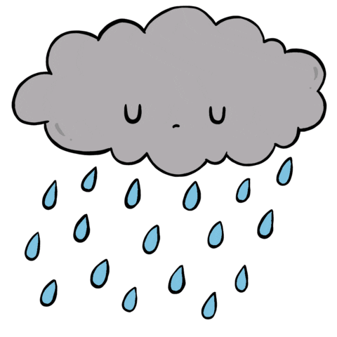
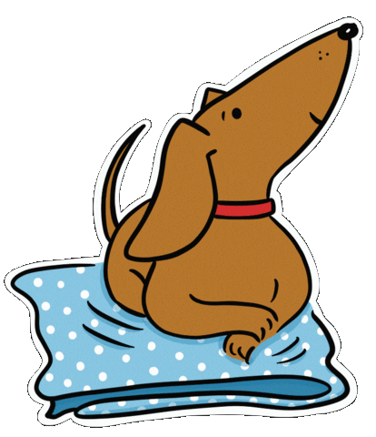
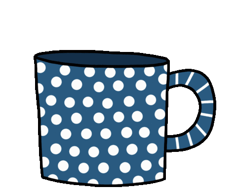
A useful sticker system starts with the moments your audience already shares. I bring those moments into a consistent visual language, with motion and search terms that help each asset find its place.
It connects brand identity with product thinking and marketing: clear expressions, relevant search language, and visual communication that works in the places people actually use it. Reach provides a way to learn and refine the collection over time.
A proposed GIF collection exploring disability awareness, inclusion, and the energy of the Paralympic Games.
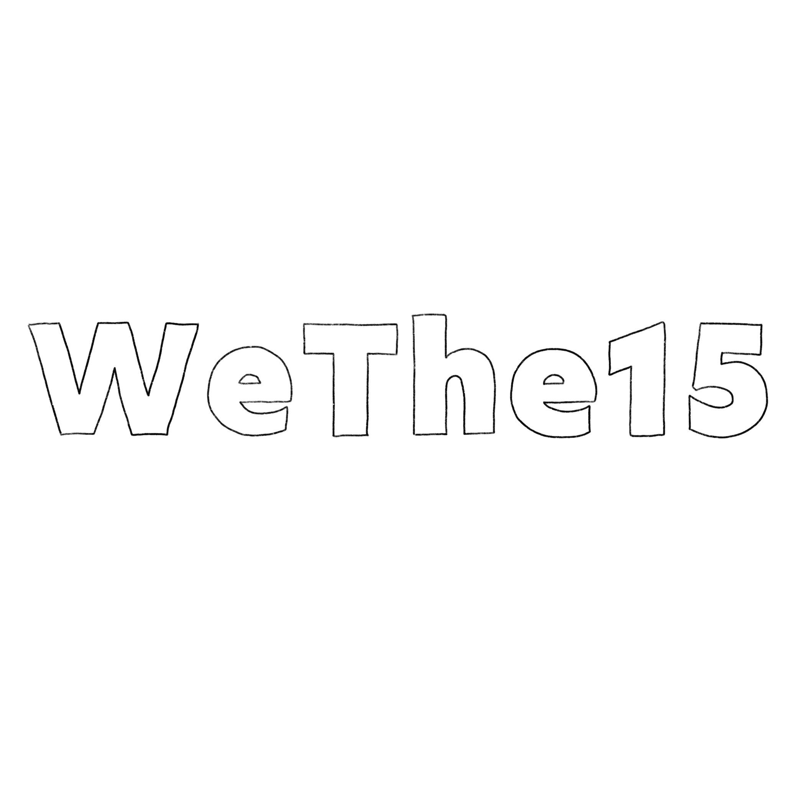
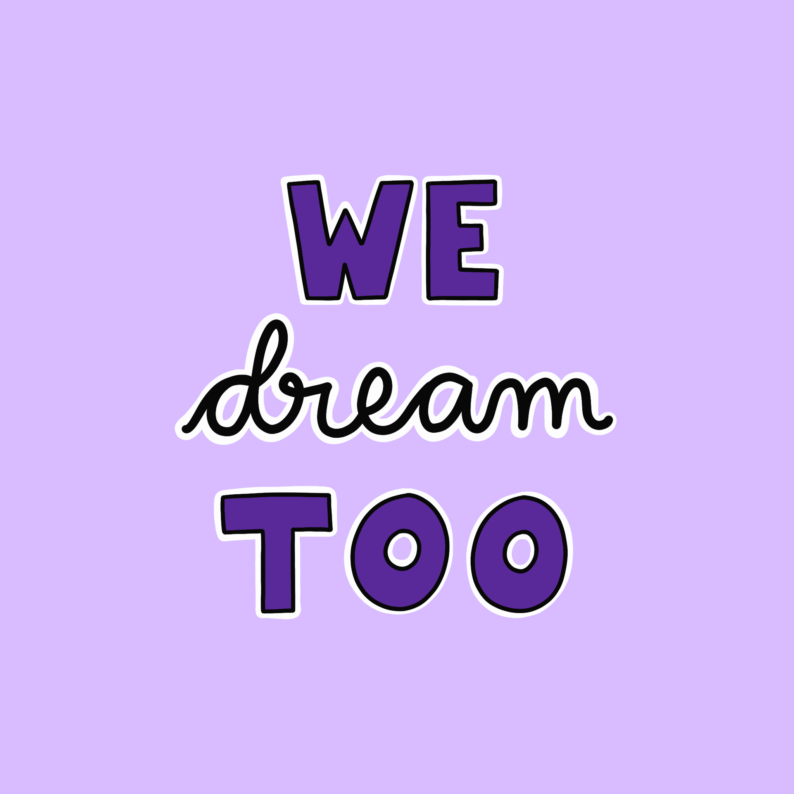
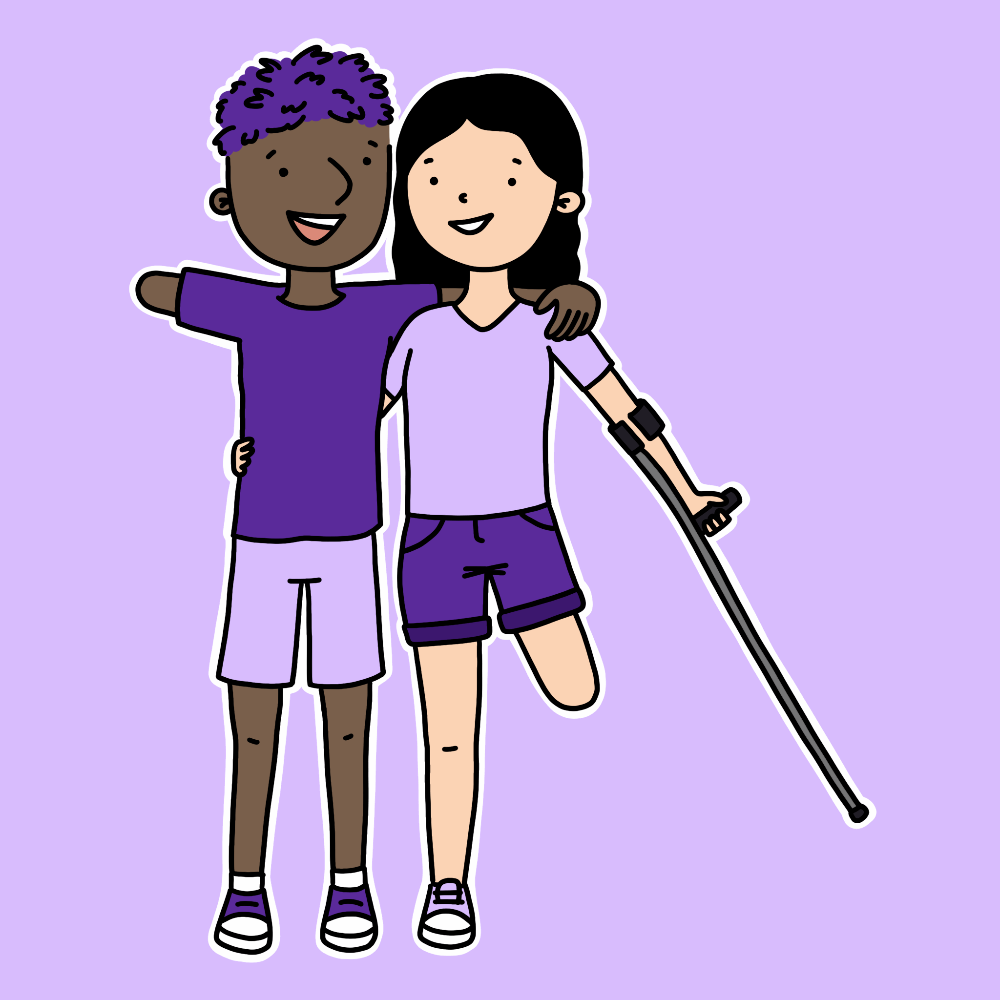
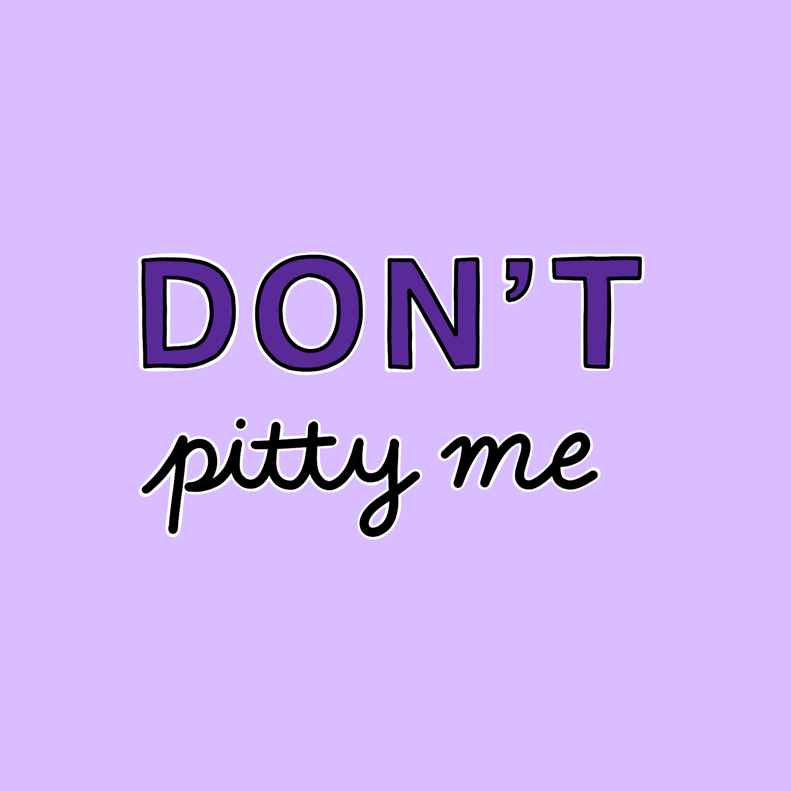
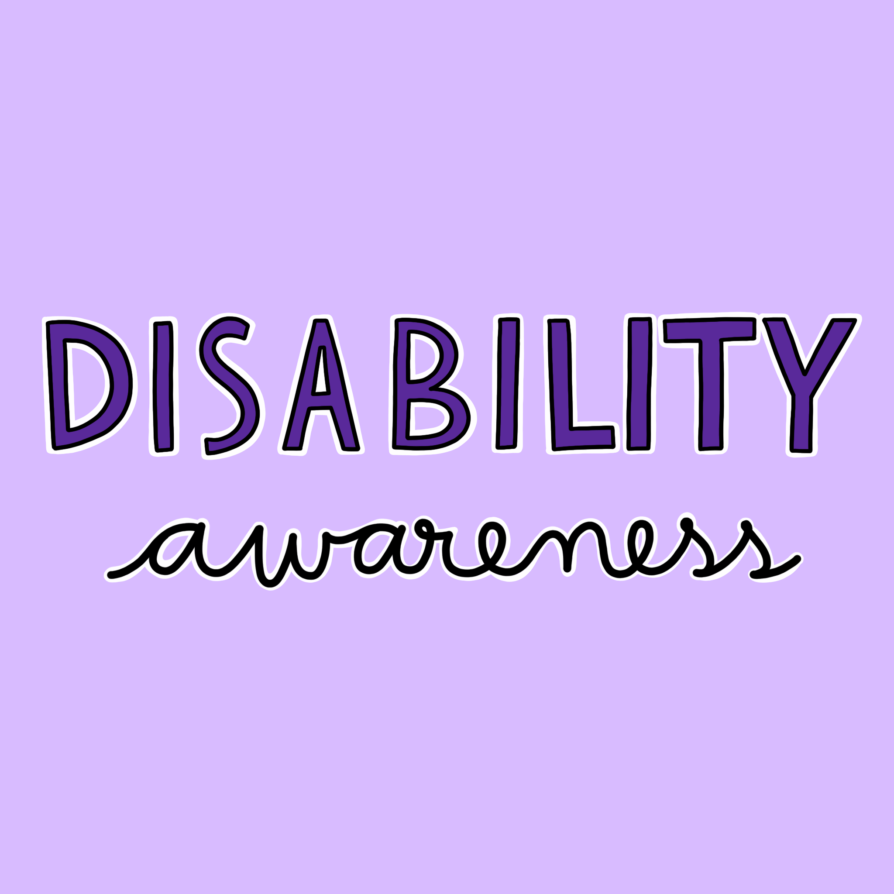
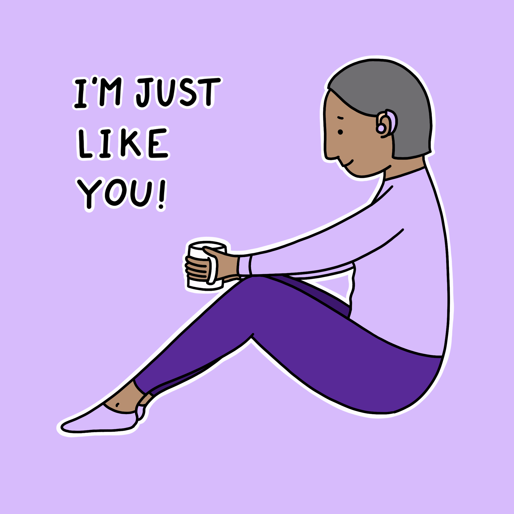
If you’re building a brand or digital product and want to explore an animated sticker system, send me an email.
Email me ↗